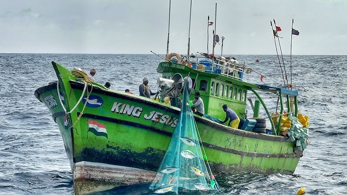
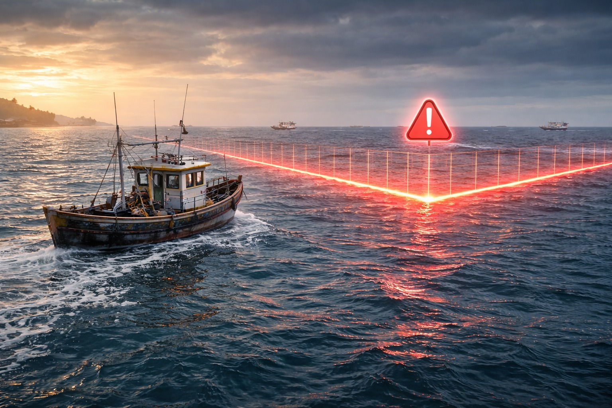
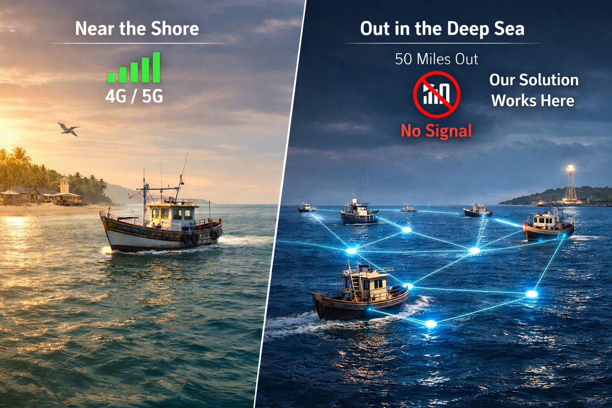
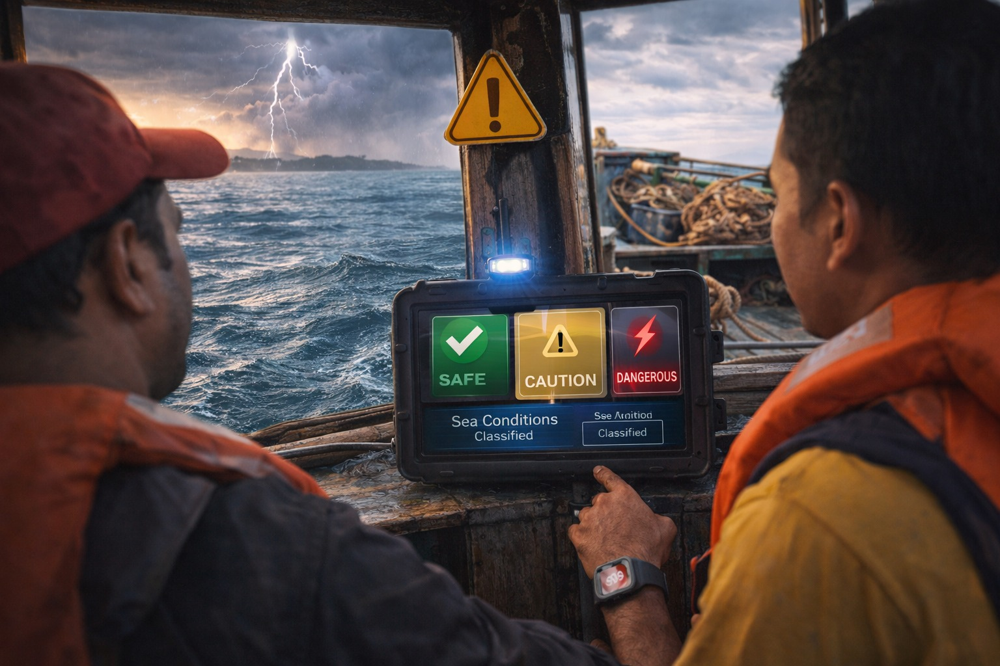

Mission-Critical AI for Coastal Safety
Marine Guardian AI
Predictive Maritime Safety for Small-Scale Fishermen
An edge-AI powered safety system that predicts border drift, detects man-overboard incidents, and keeps fishermen connected even in deep-sea environments without internet.

📍 GPS Tracking
⚠️ Border Warning
📶 SOS Mesh Network
The Problem We Are Solving

Border Drift Risk

Offshore Connectivity Gap

Hard-to-Detect Emergencies
Unintentional Border Crossing
Strong currents and lack of awareness lead to accidental maritime boundary violations, resulting in arrests and boat confiscations.
The Connectivity Gap
Mobile signals disappear a few kilometers from the coast, making standard apps useless in the deep sea.
Invisible Emergencies
Accidents like man-overboard incidents or engine failures often go unnoticed due to high engine noise and lack of communication tools.
Key Features
Smart Capabilities Powering Marine Guardian AI
Marine Guardian AI combines edge intelligence, predictive safety models, and resilient communication networks to protect fishermen even in deep-sea environments with zero internet connectivity.
AI-Powered Border Prediction 🧭
Uses Kalman filtering and regression models to forecast potential border drift 10–30 minutes in advance.
- Predicts vessel trajectory
- Early warning voice alerts
- Prevents accidental border crossings
Offline-First Edge AI 🧩
Core intelligence runs locally on the boat-mounted edge device without needing internet connectivity.
- Real-time decision making
- Works in deep-sea environments
- Low-latency predictions
Dual-Layer Emergency SOS 🚨
- Wearable SOS Band detects man-overboard incidents
- LoRa Mesh Network relays SOS signals between boats
👤
📶
🚤
Weather & Livelihood Advisory 🛰️
- On-Edge Sea Risk Classifier
- Satellite-based fishing zone prediction
- Fuel cost optimization
Safety Communication Loop 🔁
- Emergency alerts containing GPS coordinates and distress signals are instantly transmitted from the fisherman device.
- The LoRa mesh network relays the alert to nearby boats and the coast guard cloud, enabling rapid rescue coordination even without internet.
🚤
Fisherman Device
📶
Nearby Boats
☁️
Coast Guard Cloud
Status Indicators 📊
🟢 Safe
Normal operations and stable border buffer.
🟡 Caution
Border or weather risk rising.
🔴 Danger
Immediate action required.
Technical Components
A complete architecture view of Marine Guardian AI — from edge sensing and onboard intelligence to cloud coordination and emergency notifications.
System Architecture Pipeline
System Data Flow
How Marine Guardian AI processes information from sensors to emergency response.
Sensor Data Collection
Boat sensors collect real-time GPS, IMU motion data, and atmospheric pressure.
Edge AI Processing
The onboard device processes sensor data locally without needing internet connectivity.
Risk Prediction Engine
AI models detect border drift risk, dangerous sea conditions, and fall incidents.
Voice Alert System
Fishermen receive real-time Tamil voice warnings without needing to check screens.
LoRa Mesh Communication
Emergency signals are relayed between nearby boats even when there is no cellular signal.
Shore Hub Gateway
The shore station collects offshore data and prepares it for cloud synchronization.
AWS Cloud Processing
Authorities receive alerts while historical trip data is stored for analysis.